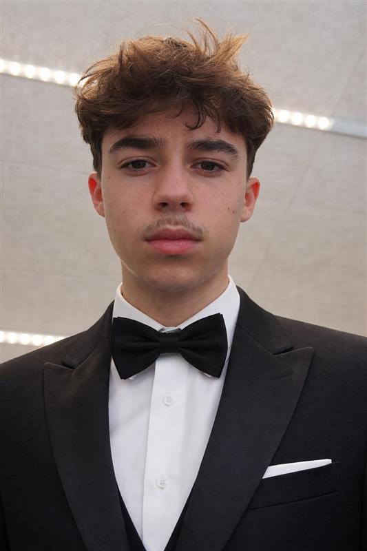

Bonjour cher utilisateur,
Je m'appelle Massimo Carota.
J'ai 17 ans, j'habite à Marchissy en Suisse
et je suis actuellement à l'ETML.
Mes passions sont le tennis, écouter de la musique, regarder des séries et des films, et j'aime l'informatique.
J'ai choisi ce film car c'est mon film préféré et je ne l'oublierai jamais. J'ai adoré le thème romain et le protagoniste était fou. Quand je l'ai vu pour la première fois c'était il y a quelques mois — le film date de 2000 et 2024 avec le nouveau — mon préféré reste le premier du nom, ça reste la base.
Secrétaire Neurologie
À l'entreprise Neuro-la-côte à Gland
Ergothérapie
Stage découverte de l'ergothérapie
Vendeur en alimentation Migros
Stage en tant que vendeur en alimentation à la Migros à Gland
2025-2029 (en cours)
ETML — CFC avec MATU intégrée
2024-2025
Gymnase de Nyon (1ère année) — École de culture générale
2021-2024
Établissement scolaire de Begnins — L'Esplanade 9ème, 10ème et 11ème VG niveaux 2/2/2
2019-2021
École de Le Vaud — 7P à 8P
2011-2019
École primaire de Bassins — 1P à 6P